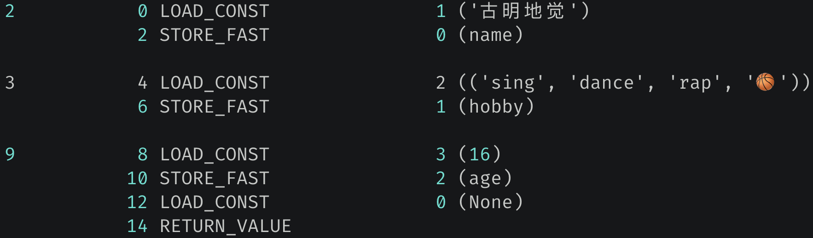

楔子
当我们执行一个 py 文件的时候，只需要在命令行中输入 python xxx.py 即可，但你有没有想过这背后的流程是怎样的呢？
首先 py 文件不是一上来就直接执行的，而是会先有一个编译的过程，整个步骤如下：

这里我们看到了 Python 编译器、Python 虚拟机，而且我们平常还会说 Python 解释器，那么三者之间有什么区别呢？

Python 编译器负责将 Python 源代码编译成 PyCodeObject 对象，然后交给 Python 虚拟机来执行。
那么 Python 编译器和 Python 虚拟机都在什么地方呢？如果打开 Python 的安装目录，会发现有一个 python.exe，点击的时候会通过它来启动一个终端。但问题是这个文件大小还不到 100K，不可能容纳一个编译器加一个虚拟机，所以它下面还有一个 python38.dll。没错，编译器、虚拟机都藏身于 python38.dll 当中。
因此 Python 虽然是解释型语言，但也有编译的过程。源代码会被编译器编译成 PyCodeObject 对象，然后再交给虚拟机来执行。而之所以要存在编译，是为了让虚拟机能更快速地执行，比如在编译阶段常量都会提前分配好，而且还可以尽早检测出语法上的错误。
pyc 文件是什么
在 Python 开发时，我们肯定都见过这个 pyc 文件，它一般位于 __pycache__ 目录中，那么 pyc 文件和 PyCodeObject 之间有什么关系呢？
首先我们都知道字节码，虚拟机的执行实际上就是对字节码不断解析的一个过程。然而除了字节码之外，还应该包含一些其它的信息，这些信息也是 Python 运行的时候所必需的，比如常量、变量名等等。
因此我们常听到 py 文件被编译成字节码，这句话其实不太严谨，因为字节码只是一个 PyBytesObject 对象、或者说一段字节序列。但很明显，光有字节码是不够的，还有很多的静态信息也需要被收集起来，它们整体被称为 PyCodeObject，然后 PyCodeObject 对象中有一个字段 co_code，它是一个指针，指向了这段字节序列。但是这个对象除了有指向字节码的 co_code 字段之外，还有很多其它字段，负责保存代码涉及到的常量、变量（名字、符号）等等。
所以虽然编写的是 py 文件，但虚拟机执行的是编译后的 PyCodeObject 对象。但是问题来了，难道每一次执行都要将源文件编译一遍吗？如果没有对源文件进行修改的话，那么完全可以使用上一次的编译结果。相信此时你能猜到 pyc 文件是干什么的了，它就是负责保存编译之后的 PyCodeObject 对象。
现在我们知道了，pyc 文件里面保存的内容是 PyCodeObject 对象。对于 Python 编译器来说，PyCodeObject 对象是对源代码编译之后的结果，而 pyc 文件则是这个对象在硬盘上的表现形式。
当下一次运行的时候，Python 解释器会根据 pyc 文件中记录的编译结果，直接建立内存中的 PyCodeObject 对象，而不需要再重新编译了，当然前提是没有对源文件进行修改。
PyCodeObject 底层结构
既然 PyCodeObject 对象是源代码的编译结果，那么搞清楚它的底层结构就至关重要，下面来看一下它长什么样子。
// Include/cpython/code.h
typedef struct {
PyObject_HEAD
int co_argcount;
int co_posonlyargcount;
int co_kwonlyargcount;
int co_nlocals;
int co_stacksize;
int co_flags;
int co_firstlineno;
PyObject *co_code;
PyObject *co_consts;
PyObject *co_names;
PyObject *co_varnames;
PyObject *co_freevars;
PyObject *co_cellvars;
Py_ssize_t *co_cell2arg;
PyObject *co_filename;
PyObject *co_name;
PyObject *co_lnotab;
void *co_zombieframe;
PyObject *co_weakreflist;
void *co_extra;
unsigned char *co_opcache_map;
_PyOpcache *co_opcache;
int co_opcache_flag;
unsigned char co_opcache_size;
} PyCodeObject;
这里面的每一个字段，我们一会儿都会详细介绍，并通过代码逐一演示。总之 Python 编译器在对源代码进行编译的时候，针对每一个 code block（代码块），都会创建一个 PyCodeObject 与之对应。但多少代码才算得上是一个 block 呢？事实上，Python 有一个简单而清晰的规则：当进入一个新的名字空间，或者说作用域时，就算是进入一个新的 block 了。举个例子：
class A:
a = 123
def foo():
a = []
我们仔细观察一下上面这段代码，它在编译完之后会有三个 PyCodeObject 对象，一个是对应整个 py 文件（模块）的，一个是对应 class A 的，一个是对应 def foo 的。因为这是三个不同的作用域，所以会有三个 PyCodeObject 对象。
所以一个 code block 对应一个作用域、同时也对应一个 PyCodeObject 对象。Python 的类、函数、模块都有自己独立的作用域，因此在编译时也都会有一个 PyCodeObject 对象与之对应。
PyCodeObject 字段解析
PyCodeObject 我们知道它是干什么的了，那如何才能拿到这个对象呢？首先该对象在 Python 里面的类型是 <class 'code'>，但是底层没有将这个类暴露给我们，因此 code 这个名字在 Python 里面只是一个没有定义的变量罢了。
但我们可以通过其它的方式进行获取，比如函数。
def func():
pass
print(func.__code__) # <code object ......
print(type(func.__code__)) # <class 'code'>
我们可以通过函数的 __code__ 属性拿到底层对应的 PyCodeObject 对象，当然也可以获取里面的字段，下面就来演示一下，并详细介绍每个字段的含义。
PyObject_HEAD：对象的头部信息
我们看到 Python 真的一切皆对象，源代码编译之后的结果也是一个对象。
co_argcount：可以通过位置参数传递的参数个数
def foo(a, b, c=3):
pass
print(foo.__code__.co_argcount) # 3
def bar(a, b, *args):
pass
print(bar.__code__.co_argcount) # 2
def func(a, b, *args, c):
pass
print(func.__code__.co_argcount) # 2
函数 foo 中的参数 a、b、c 都可以通过位置参数传递，所以结果是 3。而函数 bar 则是两个，这里不包括 *args。最后函数 func 显然也是两个，因为参数 c 只能通过关键字参数传递。
co_posonlyargcount：只能通过位置参数传递的参数个数，Python3.8 新增
def foo(a, b, c):
pass
print(foo.__code__.co_posonlyargcount) # 0
def bar(a, b, /, c):
pass
print(bar.__code__.co_posonlyargcount) # 2
注意：这里是只能通过位置参数传递的参数个数。对于 foo 而言，里面的三个参数既可以通过位置参数、也可以通过关键字参数传递，所以个数是 0。而函数 bar，里面的 a、b 只能通过位置参数传递，所以个数是 2。
co_kwonlyargcount：只能通过关键字参数传递的参数个数
def foo(a, b=1, c=2, *, d, e):
pass
print(foo.__code__.co_kwonlyargcount) # 2
这里是 d 和 e，它们必须通过关键字参数传递。
co_nlocals：代码块中局部变量的个数，也包括参数
def foo(a, b, *args, c, **kwargs):
name = "xxx"
age = 16
gender = "f"
c = 33
print(foo.__code__.co_varnames)
"""
('a', 'b', 'c', 'args', 'kwargs', 'name', 'age', 'gender')
"""
print(foo.__code__.co_nlocals)
"""
8
"""
co_varnames 保存的是代码块的局部变量，显然 co_nlocals 就是它的长度。并且我们看到在编译之后，函数的局部变量就已经确定了，因为它们是静态存储的。
co_stacksize：执行该段代码块所需要的栈空间
def foo(a, b, c):
name = "xxx"
age = 16
gender = "f"
c = 33
print(foo.__code__.co_stacksize) # 1
这个暂时不需要太关注，后续介绍栈帧的时候会详细说明。
co_flags：函数标识
先来提出一个问题：
def some_func():
return "hello world"
def some_gen():
yield
return "hello world"
print(some_func.__class__)
print(some_gen.__class__)
"""
<class 'function'>
<class 'function'>
"""
print(some_func())
"""
hello world
"""
print(some_gen())
"""
<generator object some_gen at 0x1028a80b0>
"""
调用 some_func 会将代码执行完毕，调用 some_gen 会返回生成器，但问题是这两者都是函数类型，为什么执行的时候会有不同的表现呢？可能有人觉得这还不简单，Python 具有词法作用域，由于 some_func 里面没有出现 yield 关键字，所以是普通函数，而 some_gen 里面出现了 yield，所以是生成器函数。
从源代码来看确实如此，但源代码是要编译成 PyCodeObject 对象的，在编译之后，函数内部是否出现 yield 关键字这一信息要怎么体现呢？答案便是通过 co_flags 字段。
然后解释器内部定义了一系列的标志位，通过和 co_flags 字段按位与，便可判断函数是否具备指定特征。常见的标志位如下：
// Include/code.h
// 函数参数是否包含 *args
#define CO_VARARGS 0x0004
// 函数参数是否包含 **kwargs
#define CO_VARKEYWORDS 0x0008
// 函数是否是内层函数
#define CO_NESTED 0x0010
// 函数是否是生成器函数
#define CO_GENERATOR 0x0020
// 函数是否是协程函数
#define CO_COROUTINE 0x0080
// 函数是否是异步生成器函数
#define CO_ASYNC_GENERATOR 0x0200
我们实际测试一下，比如检测函数的参数类型：
CO_VARARGS = 0x0004
CO_VARKEYWORDS = 0x0008
CO_NESTED = 0x0010
def foo(*args):
pass
def bar():
pass
# 因为 foo 的参数包含 *args，所以和 CO_VARARGS 按位与的结果为真
# 而 bar 的参数不包含 *args，所以结果为假
print(foo.__code__.co_flags & CO_VARARGS) # 4
print(bar.__code__.co_flags & CO_VARARGS) # 0
def foo(**kwargs):
pass
def bar():
pass
print(foo.__code__.co_flags & CO_VARKEYWORDS) # 8
print(bar.__code__.co_flags & CO_VARKEYWORDS) # 0
def foo():
def bar():
pass
return bar
# foo 是外层函数，所以和 CO_NESTED 按位与的结果为假
# foo() 返回的是内层函数，所以和 CO_NESTED 按位与的结果为真
print(foo.__code__.co_flags & CO_NESTED) # 0
print(foo().__code__.co_flags & CO_NESTED) # 16
当然啦，co_flags 还可以检测一个函数的类型。比如函数内部出现了 yield，那么它就是一个生成器函数，调用之后会得到一个生成器；使用 async def 定义，那么它就是一个协程函数，调用之后会得到一个协程。
这些在词法分析的时候就可以检测出来，编译之后会体现在 co_flags 字段中。
CO_GENERATOR = 0x0020
CO_COROUTINE = 0x0080
CO_ASYNC_GENERATOR = 0x0200
# 如果是生成器函数，那么 co_flags & 0x20 为真
def foo1():
yield
print(foo1.__code__.co_flags & 0x20) # 32
# 如果是协程函数，那么 co_flags & 0x80 为真
async def foo2():
pass
print(foo2.__code__.co_flags & 0x80) # 128
# 显然 foo2 不是生成器函数，所以 co_flags & 0x20 为假
print(foo2.__code__.co_flags & 0x20) # 0
# 如果是异步生成器函数，那么 co_flags & 0x200 为真
async def foo3():
yield
print(foo3.__code__.co_flags & 0x200) # 512
# 显然它不是生成器函数、也不是协程函数
# 因此和 0x20、0x80 按位与之后，结果都为假
print(foo3.__code__.co_flags & 0x20) # 0
print(foo3.__code__.co_flags & 0x80) # 0
在判断函数种类时，这种方式是最优雅的。
co_firstlineno：代码块的起始位置在源文件中的哪一行
def foo(a, b, c):
pass
# 显然是文件的第一行
# 或者理解为 def 所在的行
print(foo.__code__.co_firstlineno) # 1
如果函数出现了调用呢？
def foo():
return bar
def bar():
pass
print(foo().__code__.co_firstlineno) # 4
如果执行 foo，那么会返回函数 bar，因此结果是 def bar(): 所在的行数。所以每个函数都有自己的作用域，以及 PyCodeObject 对象。
co_code：指令集，也就是字节码，它是一个 bytes 对象
def foo(a, b, c):
name = "satori"
age = 16
gender = "f"
print(name, age, gender)
# 字节码，一个 bytes 对象，它保存了要操作的指令
# 但光有字节码是肯定不够的，还需要其它的静态信息
# 显然这些信息连同字节码一样，都位于 PyCodeObject 中
print(foo.__code__.co_code)
"""
b'd\x01}\x03d\x02}\x04d\x03}\x05t\x00|\x03|\x04|\x05\x83\x03\x01\x00d\x00S\x00'
"""
co_consts：常量池，一个元组，保存代码块中创建的所有常量
def foo():
a = 122 + 1
b = "hello"
c = (1, 2)
d = ["x", "y"]
e = {"p": "k"}
f = {7, 8}
print(foo.__code__.co_consts)
"""
(None, 123, 'hello', (1, 2), 'x', 'y', 'p', 'k', 7, 8)
"""
co_consts 里面出现的都是编译阶段可以确定的常量，而 ["x", "y"] 和 {"p": "k"} 没有出现，由此我们可以得出，列表和字典绝不是在编译阶段构建的。编译时，只是收集了里面的元素，然后等到运行时再去动态构建。
不过问题来了，在构建的时候解释器怎么知道是要构建列表、还是字典、亦或是其它的什么对象呢？所以这就依赖于字节码了，解释字节码的时候，会判断到底要构建什么样的对象。因此解释器执行的是字节码，核心逻辑都体现在字节码中，但是光有字节码还不够，它包含的只是程序的主干逻辑，至于变量、常量，则从符号表和常量池里面获取。
另外函数里面的变量 a 等于 122 + 1，但常量池里面却存储了 123，这个过程叫做常量折叠。常量之间的加减乘除，结果依旧是一个常量，编译阶段就会计算好。
co_names：符号表，一个元组，保存代码块中引用的其它作用域的变量
c = 1
def foo(a, b):
print(a, b, c)
d = (list, int, str)
print(foo.__code__.co_names)
"""
('print', 'c', 'list', 'int', 'str')
"""
虽然一切皆对象，但看到的都是指向对象的变量，所以 print, c, list, int, str 都是变量，它们都不在当前 foo 函数的作用域中。
co_varnames：符号表，一个元组，保存当前作用域中创建的局部变量
def foo(a, b, c):
name = "satori"
age = 16
gender = "f"
print(name, age, gender)
# 当前作用域中创建的变量，注意它和 co_names 的区别
# co_varnames 保存的是当前作用域中创建的局部变量
# 而 co_names 保存的是当前作用域中引用的其它作用域的变量
print(foo.__code__.co_varnames)
"""
('a', 'b', 'c', 'name', 'age', 'gender')
"""
print(foo.__code__.co_varnames)
"""
('print',)
"""
co_cellvars：一个元组，保存外层函数的作用域中被内层函数引用的变量
co_freevars：一个元组，保存内层函数引用的外层函数的作用域中的变量
def foo(a, b, c):
def bar():
print(a, b, c)
return bar
# co_cellvars：外层函数的作用域中被内层函数引用的变量
# co_freevars：内层函数引用的外层函数的作用域中的变量
print(foo.__code__.co_cellvars)
print(foo.__code__.co_freevars)
"""
('a', 'b', 'c')
()
"""
# foo 里面的变量 a、b、c 被内层函数 bar 引用了
# 所以它的 co_cellvars 是 ('a', 'b', 'c')
# 而 foo 不是内层函数，所以它的 co_freevars 是 ()
bar = foo(1, 2, 3)
print(bar.__code__.co_cellvars)
print(bar.__code__.co_freevars)
"""
()
('a', 'b', 'c')
"""
# bar 引用了外层函数 foo 里面的变量 a、b、c
# 所以它的 co_freevars 是 ('a', 'b', 'c')
# 而 bar 已经是最内层函数了，所以它的 co_cellvars 是 ()
当然目前的函数只嵌套了两层，但嵌套三层甚至更多层也是一样的。
def foo(a, b, c):
def bar(d, e):
print(a)
def func():
print(b, c, d, e)
return func
return bar
# 对于 foo 而言，它的内层函数就是 bar
# 至于最里面的 func，由于定义在 bar 的内部，因此可以看做是 bar 函数体的一部分
# 而 foo 里面的变量 a、b、c 都被内层函数引用了
print(foo.__code__.co_cellvars) # ('a', 'b', 'c')
print(foo.__code__.co_freevars) # ()
bar = foo(1, 2, 3)
# 对于函数 bar 而言，它的内层函数就是 func
# 而显然 bar 里面的变量 d 和 e 被 func 引用了
print(bar.__code__.co_cellvars) # ('d', 'e')
# 然后 bar 引用了外层函数 foo 里面的 a、b、c
print(bar.__code__.co_freevars) # ('a', 'b', 'c')
# 所以 co_cellvars 和 co_freevars 这两个字段的关系有点类似镜像
co_cellvars 和 co_freevars 在后续介绍闭包的时候会用到。
co_filename：代码块所在的文件的路径
# 文件名：main.py
def foo():
pass
print(foo.__code__.co_filename)
"""
/Users/satori/Documents/testing_project/main.py
"""
如果你无法使用 IDE，那么便可通过该字段查看函数定义在哪个文件中。
co_name：代码块的名字
def foo():
pass
print(foo.__code__.co_name) # foo
对于函数来说，代码块的名字就是函数名。
co_lnotab：负责存储指令的偏移量和源代码行号之间的对应关系
PyCodeObject 是源代码编译之后的产物，虽然两者的结构千差万别，但体现出的信息是一致的。像源代码具有行号，那么编译成 PyCodeObject 之后，行号信息也应该要有专门的字段来维护，否则报错时我们就无法快速定位到行号。
def foo():
name = "古明地觉"
hobby = (
"sing",
"dance",
"rap",
"🏀"
)
age = 16
我们通过 dis 模块反编译一下。

第一列数字表示行号，第二列数字表示字节码指令的偏移量，或者说指令在整个字节码指令集中的索引。我们知道字节码指令集就是一段字节序列，由 co_code 字段维护，并且每个指令都带有一个参数，所以偏移量（索引）为 0 2 4 6 8 ··· 的字节表示指令，偏移量为 1 3 5 7 9 ··· 的字节表示参数。
关于反编译的具体细节后续会说，总之一个字节码指令就是一个八位整数。对于当前函数来说，它的字节码偏移量和行号的对应关系如下：
偏移量和源代码行号的对应关系便由 co_lnotab（一个字节序列）维护，只不过 co_lnotab 并没有直接记录这些信息，而是记录的增量值。
- (0, 1) 到 (0, 2)：偏移量增加 0，行号增加 1；
- (0, 2) 到 (4, 3)：偏移量增加 4，行号增加 1；
- (4, 3) 到 (8, 9)：偏移量增加 4，行号增加 6；
所以 co_lnotab 便是 0 1 4 1 4 6，我们验证一下。

结果和我们分析的一样。
以上就是 PyCodeObject 里面的字段的含义，至于剩下的几个字段就无需关注了。
小结
- Python 解释器 = Python 编译器 + Python 虚拟机。
- 编译器先将 .py 源码文件编译成 PyCodeObject 对象，然后再交给虚拟机执行。
- PyCodeObject 对象可以认为是源码文件的另一种等价形式，但经过编译，虚拟机可以更快速地执行。
- 为了避免每次都要对源文件进行编译，因此编译后的结果会序列化在 .pyc 文件中，如果源文件没有做改动，那么下一次执行时会直接从 .pyc 文件中读取。
- Python 的函数、类、模块等，都具有各自的作用域，每个作用域对应一个独立的代码块，在编译时，Python 编译器会为每个代码块都创建一个 PyCodeObject 对象。
欢迎大家关注我的公众号：古明地觉的编程教室。

如果觉得文章对你有所帮助，也可以请作者吃个馒头，Thanks♪(･ω･)ﾉ。